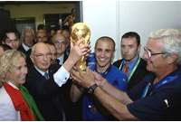

ПРИВЕТ УЧАСТНИКАМ СОРЕВНОВАНИЙ! |
|
|---|---|
| Виды спорта: | футболФутбо́л (англ. football от foot «ступня» + ball «мяч») — командный вид спорта, в котором целью является забить мяч в ворота соперника ногами или другими частями тела (кроме рук) большее количество раз, чем команда соперника. В настоящее время самый популярный и массовый вид спорта в мире.Игрок, играющий в эту игру, — футболи́ст. Есть 17 официальных правил игры, каждое из которых содержит список оговорок и руководящих принципов. Эти правила предназначены для применения на всех уровнях футбола, хотя есть некоторые изменения для таких групп, как юниоры, взрослые, женщины и люди с ограниченными физическими возможностями. Законы очень часто формулировались в общих чертах, которые позволяют упростить их применения в зависимости от характера игры. Правила игры публикуются в ФИФА, но поддерживаются Международным советом футбольных ассоциаций (IFAB). |
ГЛАВНОЕ НЕ ПОБЕДА, А УЧАСТИЕ! |
|